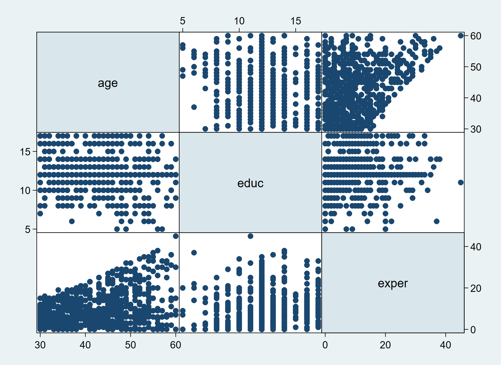

Empirical Methods in Economics
Motivation
Returns to Education
- one of the most-tested economic relationships is that between wages and education because
- wages are the most important source of income for most people
- education is the most important investment decision for anyone
- provision of access to education is one of the most effective equalizers in society
- what are the returns to education? (good investment?)
- how can this be quantified empirically?
- the reason students keep studying may just be that they expect to earn higher wages in the future
- it is easy to establish that higher-educated earn more
- we can also deduce how much an extra year of schooling delivers in terms of extra wages (return to schooling)
- the canonical model to measuring the returns to educational investment is that of a Mincer-earnings function \[\text{log earnings} = \beta_0 + \beta_1 \; \text{years of schooling} + \beta_2 \; \text{experience} + \ldots\] \(\beta_1\) measures return to (an additional year of) schooling
- real returns to education vary markedly across groups, countries, and time; good guess: 9% [3%-15%] per year of education, and correspondingly higher per degree program
- these are good direct returns for any investment, but note:
- statistical uncertainty around such estimates
- estimate for average student; may not hold for every individual
- nonmonetary returns (health, happiness, fertility and marriage market success) and spillover effects on others (positive externality: reduced crime, civic participation, …) are not measured
- difficult: assess direction of causality:
- do higher educated earn more because they are more productive?
- do high earners find it both easier to get education and to be more productive?
Estimation
Linear Model and Ordinary Least Squares
- Model relation between \(Y\) and \(X\), allowing for disturbance \(U\)
- functional form postulate: model is linear \[Y_i = \beta_0 + \beta_1 X_i + U_i\]
where \(\beta_0\) and \(\beta_1\) are unknown parameters - assume we have a random sample of size \(N\)
- can estimate parameters (determine them from the observed variation in the data) by minimizing the sum of squared residuals
- define predictions of dependent variable/model as \[\widehat{Y}_i=\widehat{\beta}_0+\widehat{\beta}_1 X_i\] where \(\widehat{\beta}_0\) and \(\widehat{\beta}_1\) denote estimates
- rewrite model as \[U_i = Y_i - (\beta_0 + \beta_1 X_i)\] then the residual (=what’s not ‘explained’) is defined as \[\widehat{U}_i = Y_i -\underbrace{ (\widehat{\beta}_0 + \widehat{\beta}_1 X_i)}_{\widehat{Y}_i} = Y_i - \widehat{Y}_i\] it is a function of \(\widehat{\beta}_0\) and \(\widehat{\beta}_1\): \(\widehat{U}_i(\widehat{\beta}_0,\widehat{\beta}_1)\)
- Ordinary Least Squares (OLS) is a linear regression technique solving \[ (\widehat{\beta}_0,\widehat{\beta}_1) \to \min \sum_{i=1}^n (\widehat{U}_i(\widehat{\beta}_0,\widehat{\beta}_1))^2\]
- solution can be shown to be \[ \widehat{\beta}_0 = \overline{Y} - \widehat{\beta}_1 \overline{X}\qquad \qquad \widehat{\beta}_1 = \frac{\text{cov}(X,Y)}{\text{var}(X)}\] where \[
\overline{Y} = \frac{1}{n}\sum_{i=1}^n Y_i \quad
\text{var}(Y) = \frac{1}{n}\sum_{i=1}^n (Y_i-\overline{Y})^2 \quad
\text{cov}(X,Y) = \frac{1}{n}\sum_{i=1}^n (Y_i-\overline{Y})(X_i-\overline{X})
\]
- mean of predicted values \(=\) mean of observed data, \(\overline{\widehat{Y}}=\overline{Y}\) (by construction)
- OLS is one of many (several) techniques suitable for the linear model
- the linear model as shown is linear in both variables and parameters
- important, however, is linearity in parameters
- a formulation allowing for nonlinear terms in variables can also be a linear model
Examples
\[ \begin{split} Y_i &= \beta_0 + \beta_1 X_i^2 + U_i \\ \\ Y_i &= \beta_0 + \beta_1 \ln(X_i) + U_i \end{split} \]
The nonlinear variables need to be transformed first \[ \begin{split} Y_i &= \beta_0 + \beta_1 X2_i + U_i; \qquad X2_i = X_i^2\\ \\ Y_i &= \beta_0 + \beta_1 lX_i + U_i; \qquad lX_i = \ln(X_i) \end{split} \]
open data set and use regression:
Menu (\(\equiv\)) > Open > Browse ...
nlsw88.xlsx (2,246 observations)
Analyses > Regression > Linear Regression
move variables to:
wage \(\to\) Dependent variable
grade \(\to\) Covariates
(Hourly wage on Current grade completed)
- the table output will list the coefficient estimate \(\beta_0\) labeled as
Intercept, and \(\beta_1\) by the associated variable name
transform (nonlinear) variables
e.g., \(lX = \ln(X)\)
Variables > Compute > Formula > \(f_x=\)

Goodness of Fit
- how well does the regression model ‘explain’ the data?
- we can measure the ratio of the variation in \(Y\) that the model predicts to the variation of \(Y\) observed in the data, and build the \(R^2 \in [0; 1]\)
- typically, the higher \(R^2\), the better the model’s fit, the less variation is unaccounted for
- however, never maximize \(R^2\) to the limit (\(\to 1\)), since a misspecification is often associated with a (very) high \(R^2\)
define sums of squares (SS) \[ \begin{split} \text{total SS} &\quad SS_\text{tot}=\sum_i (Y_i-\overline{Y})^2 \\ \text{model SS} &\quad SS_\text{mod}=\sum_i (\widehat{Y}_i -\overline{Y})^2 \\ \text{residual SS} &\quad SS_\text{res}=\sum_i (Y_i - \widehat{Y}_i)^2 \end{split} \] note: \(SS_\text{mod}\) aka ‘explained SS’ or ‘regression SS’
can measure ‘goodness of fit’ as \[R^2 \equiv 1 - \frac{SS_{\text{res}}}{SS_{\text{tot}}} = 1 - \frac{{\text{var}}_{\text{res}}}{{\text{var}}_{\text{tot}}}= \frac{SS_{\text{mod}}}{SS_{\text{tot}}}\] i.e., one minus fraction of total variation unexplained by the model, or fraction of total variation explained by the model.
- sums of squares (SS) can be displayed using an ANCOVA table
Analyses > ANOVA > ANCOVA > Model
select: sum of squares “Type 1”
\(SS_{\text{mod}} = 4743.21+ 136.45+ 5179.23+ 7.03 = 10065.92\)
\(SS_{\text{tot}} = SS_{\text{mod}} + SS_{\text{res}} 9873.64 + 64051.35 = 74117.27\)
\(R^2 = \frac{SS_{\text{mod}}}{SS_{\text{tot}}} = \frac{10065.92}{74117.27} = 0.1358\)

Multiple Regression
- extend model by adding more regressors, \[Y_i = \beta_0 + \beta_1 X_{1i} + \beta_2 X_{2i} + U_i\] prediction based on both \(X_1\) and \(X_2\), \[\widehat{Y}_i = \widehat{\beta}_0 + \widehat{\beta}_1 X_{1i} + \widehat{\beta}_2 X_{2i}\]
- residuals are as before \[\widehat{U}_i = Y_i - \widehat{Y}_i\]
- predicted values are not on a ‘line’ but on a 2-dimensional plane
- adding in more regressors \(\to\) higher-dimensional regression (hyper)‘plane’
- this object may tilt when regressors are added or removed
- R\(^2\) goes up (never goes down) if we add more regressors to the model
- to correct for the fact that this effect is partly mechanical, we can adjust for the number of regressors \(k^*\) in the model, \[R^2_{\text{adj}} = \frac{R^2(n-1)-k^*}{n-k^*-1}\] {\(k^*\) is exclusive of a constant term; compare book, where \(k=k^*+1\)}
- health warning: it makes little sense to just maximize \(R^2\)
- mathematically, regression estimation involves simple linear (matrix) algebra, which computers can perform near-effortlessly
 can also produce multiple regression, within limits
can also produce multiple regression, within limits- drawback, however, is that apart from coefficient estimates, there are no further statistics, like (adjusted) R\(^2\) or \(t\)-values
- to estimate the model \(Y_i = \beta_0 + \beta_1 X_{1i} + \beta_2 X_{2i} + \beta_3 X_{3i} + U_i\), use
Analyses > Regression > Linear Regression
move variables to:
Y \(\to\) Dependent variable
X1, X2 and X3 \(\to\) Covariates
Specification Issues Multiple Regression
adding more regressors is straightforward, but correlation matters \[ Y_i = \beta_0 + \beta_1 X_{1i} + \beta_2 X_{2i} + \beta_3 X_{3i}+ \ldots + U_i \]

- if, e.g.,
exper(labor market experience) is a simple linear transformation ofageandeduc(number of years in education, starting at age 6),exper=age-educ-6, then they are perfectly correlated - perfectly multicollinear variables cannot be separately estimated
- Let the true model be \[Y_i = \beta_0 + \beta_1 X_{1i} + \beta_2 X_{2i} + U_i\] but leave out \(X_2\) \[Y_i = \beta_0 + \beta_1 X_{1i} + V_i\]
- then the error term \(V\) sucks up the effect of \(X_2\), because \[V_i = \beta_2 X_{2i} + U_i\]
- If \(\beta_2\neq 0\), and \(X_{2i}\) is correlated with \(X_{1i}\), will get biased estimates of \(\beta_1\) and \(\beta_0\) (regression line tilts compared to true model, but not clear which way)
- we speak of omitted variable bias
- omitted variable bias is troublesome, since wrong conclusions can be made
- e.g.: the gender wage gap (men earning more than women), should be conditional on things like hours worked, experience on the job, but also job description
- not correcting for those factors is like comparing apples and oranges
- some data sets have a lot of variables, and it may be tempting to toss everything into the regression that is available
- this can lead to multicollinearity
- empirical work is often an art, calling for judicious choices what to include and what not
- carefully looking at the data can aid
Interpretation of Coefficients
- Let the model be \[Y_i = \beta_0 + \beta_1 X_{1i} + \beta_2 X_{2i} + U_i\]
- \(\beta_1\) measures the partial (aka marginal) effect of \(X_1\) on \(Y\), keeping all other regressor values constant, because it corresponds to the partial derivative \[\frac{\partial Y_i}{\partial X_{1i}} = \beta_1\]
- Let \(Y = \ln(W)\) and \(X=\ln(Z)\), then \(\beta_1\) measures the elasticity of \(W\) with respect to \(Z\): \[\eta_{WZ} = \frac{\partial W}{\partial Z}\cdot \frac{Z}{W} = \frac{\partial \ln(W)}{\partial \ln(Z)} = \frac{\partial Y}{\partial X} = \beta_1\]
Dummy Variables
- Many variables are not continuous, but binary: they take two values, say 0 and 1.
- Let \(D\) be such a dummy variable so the model is \[Y_i = \beta_0 + \beta_1 D_{i} + \beta_2 X_{2i} + U_i\]
- e.g., \(D\) measures union membership: 1 - member, 0 - non-member
- The prediction is then based on both \(D\) and \(X_2\), \[\widehat{Y}_i = \left\{ \begin{array}{lll} \widehat{\beta}_0 +\qquad \; \widehat{\beta}_2 X_{2i} & \text{if}& D_{i}=0 \\ \widehat{\beta}_0 + \widehat{\beta}_1 + \widehat{\beta}_2 X_{2i} & \text{if}& D_{i}=1 \end{array} \right.\] since \(\widehat{\beta}_0 + \widehat{\beta}_1\) does not depend on \(X_2\), it is like a constant (on the vertical axis)
- sample has two subsamples: union members and non-members
- union members receive higher wages
- edit graph on
- toggle switch ‘showdummy’ to 1
- edit graph on
- let education levels be
less than high school,high school,college dropout,college, etc.; this variable is meant to be ordinal: we treat values as separate types, and split into four different dummy variables \[ \begin{split} D_1 = 1 &\quad\text{if}\quad \text{less than high school}\quad (D_1=0, \text{ otherwise}) \\ D_2 = 1 &\quad\text{if}\quad \text{high school}\quad (D_2=0, \text{ otherwise}) \\ D_3 = 1 &\quad\text{if}\quad \text{college dropout}\quad (D_3=0, \text{ otherwise}) \\ D_4 = 1 &\quad\text{if}\quad \text{college}\quad (D_4=0, \text{ otherwise}) \end{split} \] - it is tempting to write down the model as \[Y_i = \beta_0 + \beta_1 D_{1i} + \beta_2 D_{2i} + \beta_3 D_{3i} + \beta_4 D_{4i} + U_i\]
- since \(D_4=1-(D_1+D_2+D_3)\), \(D_4\) is perfectly collinear with the (sum of the) other three;
- \(\to\)model cannot be estimated
- \(D_4\) (or any other), should be omitted
categorical (including binary) variables are treated using the Factor specification for regression in Jamovi
use
nlsw88, education variable:grade, coded from 0 to 18 yearsrecode into four categories variable
educ
Transform > Formula Box >
=IF(grade>=0 and grade<=11, 1, IF(grade==12, 2, IF(grade>=13 and grade<=15, 3, IF(grade>=16 and grade<=18, 4, -9) ) ) )check
Analyses > Exploration > Descriptives, moveeduc\(\to\) variables to see a breakdownregress
Analyses > Regression > Linear Regression, moveeduc\(\to\) Factors- Jamovi selects one of the categories as omitted category
- this corresponds to including the respective dummy with a coefficient of zero
Interaction Terms
- Let \(D_1\) and \(D_2\) be dummy variables \[Y_i = \beta_0 + \beta_1 D_{1i} + \beta_2 D_{2i} + \beta_3 (D_{1i} \times D_{2i}) + U_i\]
- then \(\beta_3\) is the coefficient on an interaction term
- \((D_{1i} \times D_{2i})=1\) only if both dummy variables are 1, and hence measures the joint occurrence of both ‘events’
- example: \(D_{1}\) – married or not, \(D_2\) – south or not
- \(\beta_1\): ‘effect’ of being married
- \(\beta_2\): ‘effect’ of being from the south
- \(\beta_1+\beta_3\): ‘effect’ of being married and from the south
- Let \(D\) be a dummy variable and \(C\) continuous \[Y_i = \beta_0 + \beta_1 D_{i} + \beta_2 C_{i} + \beta_3 (D_{i} \times C_{2}) + U_i\]
- then \(\beta_3\) is the coefficient on an interaction term, allowing slopes on \(C\) to differ
- \((D_{i} \times C_{i})=C_{i}\) only if dummy variable is 1
- example: \(D\) – married or not, \(C\) – age, \(\beta_2\): slope of age for unmarried, \(\beta_2+\beta_3\): slope of age for married
- for interaction effects, within the Linear Regression screen
- open
> Model Builder - select Predictors to interact
- choose from the second arrow dropdown (interaction: All 2 way)
- open

Statistical Inference
Inference: Issues
- mechanically, we can regress anything on anything
- interpretation of results depends on inference
- statistical inference: can we say anything about a population when we only have a few data points?
- need a random sample, however there is sampling uncertainty (noise)
- want to assess how certain we are that the measured effect actually occurs
- test against a postulated Null Hypothesis, e.g., \(H_0: \beta_1 = 0.5\)
- economic, structural, or causal inference: can we say that \(X\) causes \(Y\)?
- correlation does not imply causation
- may want to compare \(Y\) in two parallel universes: one with, and one without the effect of \(X\)
- statistical inference: can we say anything about a population when we only have a few data points?
Sampling Variability
- A random sample is just one realization of a draw from a population, so the sampling process could have thrown up a different set of data points.
- the standardized coefficient of \(\widehat{\beta}_j\) is \((\widehat{\beta}_j-\beta_j^0)/\widehat{\sigma}_j\)
- \(\beta_j^0\) is believed to be the true value of \(\beta_j\)
- \(\widehat{\sigma}_j\) is the standard error of the coefficient estimate
- the distribution of the standardized coefficient is
- standard normal [\({\cal N}(0,1)\)] if \(n-k-1\) large
- student-\(t\) if \(U\sim {\cal N}(0,\sigma^2)\) even if \(n-k-1\) small
- can consider confidence intervals, \(t\) (or \(z\)) values to perform hypothesis tests, e.g., \(H_0: \beta_j=\beta_j^0\)
- the \(t\)-distribution converges to a normal when \((n-k)\to\infty\)
- tests typically inquire whether a Null Hypotheses \(H_0\) will be rejected
- for \(n\) large enough, at 5% (10%) significance level, one rejects hypothesis \(H_0\) that the coefficient is equal to \(\beta_j^0\) if its standardized version falls in the (colored) rejection area of \(\pm 1.96 (1.645)\) / outside conf.interval
- The so-called Gauss-Markov theorem states that the OLS estimator is BLUE: the best linear unbiased estimator.
- This is a very desirable property since it implies that OLS coefficient estimates have the smallest standard error (or the largest t-values) among all linear unbiased estimators, as long as conditions on the errors are met, including
- errors are uncorrelated, have equal variance and are mean zero
- stronger assumptions (such as normally distributed errors, homoskedastic errors, or indpendent errors between sampling units) are not needed
- upshot: if you can use OLS, use it!
Causal Inference
Causal Inference
- the Mincer earnings regression may not establish a causal pathway education \(\to\) wages:
- unobserved ability drives both education and wages
- or more able workers with eventually higher productivity use a college diploma to signal that they should get the high-paid job (unable workers would drop out of college)
- the
uniondummy in a wage regression may be endogenous: those with long-term career ambitions may (1) work harder (2) see the benefit of being in a union - economists use methods of causal inference that make precise under what assumptions the measured effect is causal
- one of those is a difference estimator, where one group of individuals is ‘treated’ (e.g., given high education’) and a comparison (control) group is not treated (not ‘given high education’), and we hope that the treated are somehow randomly assigned to treatment (e.g., ‘do not choose high education’)
- embed inside regression framework
Regression in Potential Outcomes Framework
- assume \(\text{corr}(D,U)=0\) and write potential outcome model as \[Y_i = \alpha + \delta_i D_i + U_i\] where \(D_i\) is treatment indicator (\(D_i=1\): treated, \(D_i=0\) not treated)
- \(\delta_i\) is individual specific
- potential outcomes for individual \(i\) are \[ \begin{split} Y_{0i}&=\alpha+\qquad U_i \qquad \text{i's outcome if not treated}\\ Y_{1i}&=\alpha+\delta_i + U_i \qquad \text{i's outcome if treated} \end{split} \]
- randomized experiment, fully under control of designer makes sure that \(\text{corr}(D,U)=0\) holds
- medical studies with lab rats
- social science: no rats but people who make choices
- individuals might switch from control into treatment group
- or defy rather than comply with treatment
- selective choices can lead to problems
Selection on Treatment
- Treatment participation \(D_i\) is related to the causal effect \(\delta_i\)
- test scores \(Y\) and remedial teaching class \(D\)
- example: teacher assigns to remedial teaching those students who
- benefit most from remedial teaching, but
- would, on average, have the same test scores without remedial teaching as the other students
- in this case, regression provides the ATET (avg. treatment eff. on the treated)
- not problematic, but matter of interpretation
Selection on Unobservables
- Treatment participation \(D_i\) correlated to unobserved or unobservable characteristics that are merged into \(U_i\)
- this selective participation causes biased and inconsistent estimates for treatment effect because \(\text{corr}(D,U)\neq 0\) (omitted var. bias: relevant characteristics not included)
- teacher assigns those students to remedial teaching
- who make test poorly, i.e. \(D_i\) related to \(Y_{0i}\)
- with learning disorders, i.e. \(D_i\) related to student characteristics \(X_i\) observed by teacher (but ignored by econometrician)
- instead, consider extended regression model
\[Y_i=\alpha+\delta_iD_i+\beta X_i+U_i\] including pre-determined characteristics used for assignment reduces the selection problem- selection problem only fully solved if all relevant characteristics used in assignment are included in regression model
Conclusions
Summary
- the linear model is an easy and useful method to quantify the association between two variables
- it may not hold if the association is non-linear
- it has problems (biased estimates) if important regressors are omitted
- it can be used, under specific circumstances, to measure a causal treatment effect; this may coincide with the
- average treatment effect, ATE
- average treatment effect on the treated, ATET
- if selection problems in the data are important, it may produce garbage
- applied econometrics offers a wide array of advanced, alternative methods